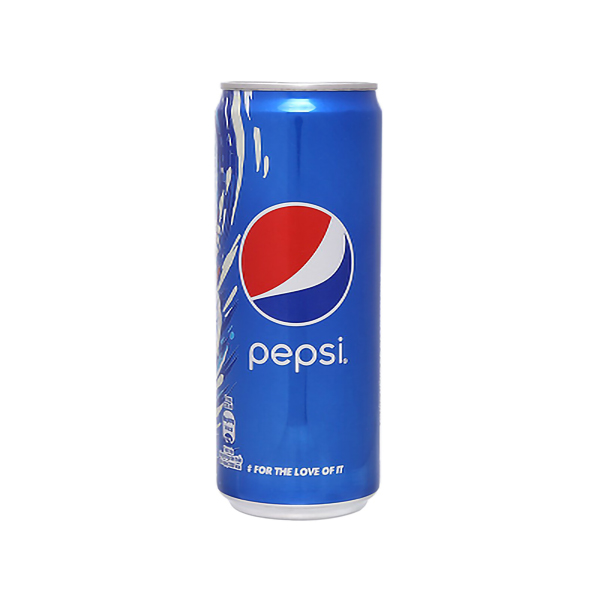
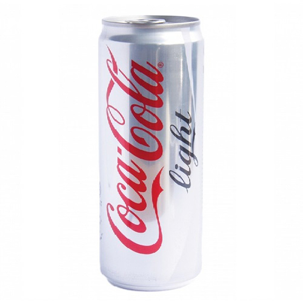
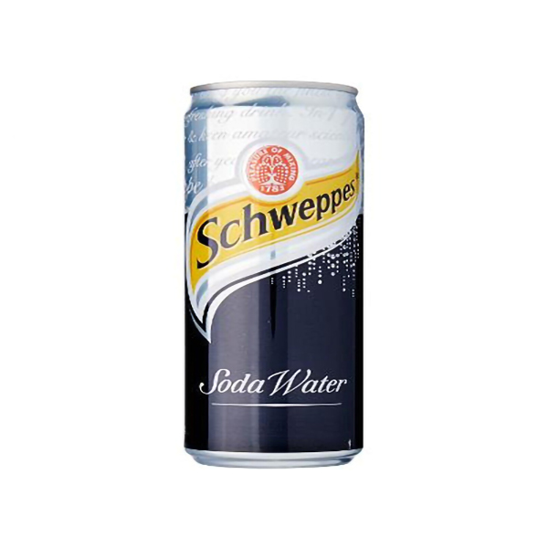
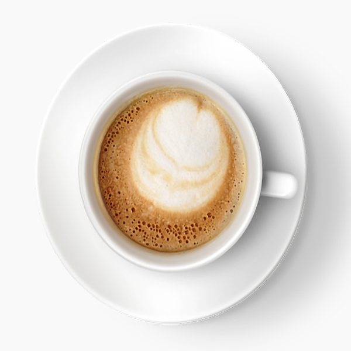
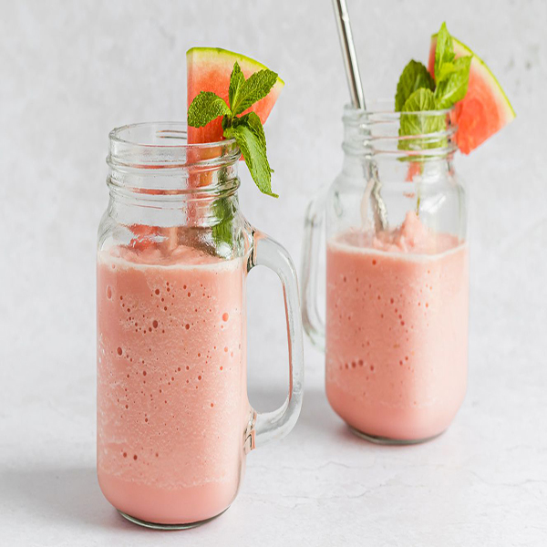
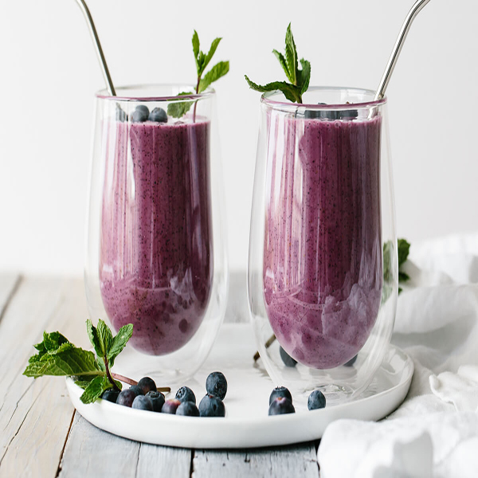
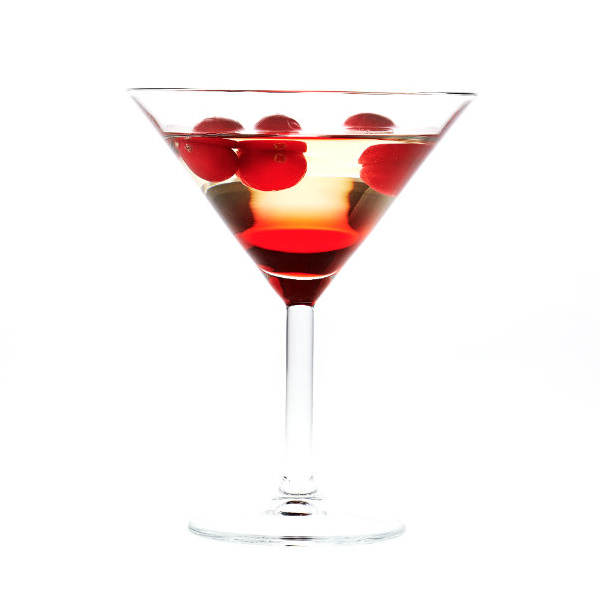
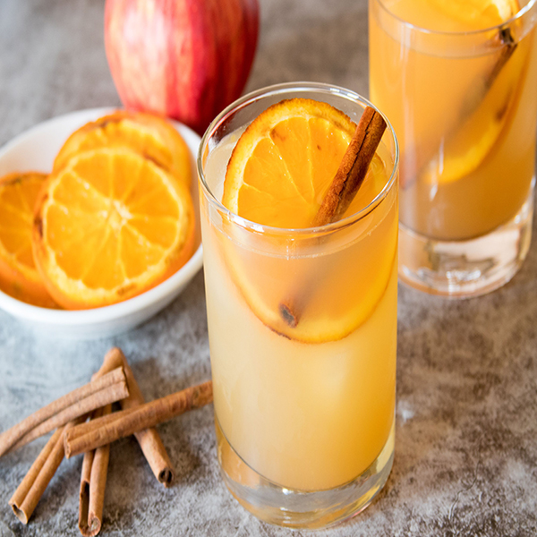

It all started in 1886 in Atlanta Georgia, when John Pemberton created the very first
delicious, uplifting and ice cold Coca‑Cola. Since then, Coca‑Cola Original Taste has
refreshed the globe to become the world’s favourite soft drink. It can be found in a variety
of sizes to suit every lifestyle and occasion.
Pepsi

Pepsi is a carbonated soft drink manufactured by PepsiCo.Pepsi is made with carbonated
water, high fructose corn syrup, caramel color, sugar, phosphoric acid, caffeine, citric
acid, and natural flavors.
Coca-Cola Diet

Diet Coke, Coca-Cola light or Light Taste Coca-Cola (in the Benelux and Germany) is a
sugar-free and no-calorie soft drink produced and distributed by The Coca-Cola Company. It
contains artificial sweeteners instead of sugar. The product quickly overtook the
company's existing diet cola, Tab, in sales.
Soda schweppes

Schweppes Soda Water is part of the Schweppes range. Schweppes Soda Water is forged through
the blending of mineral salts with pristine triple filtered water, before being infused with
thousands of delicate bubbles known as “Schweppervescence”.It can be enjoyed on its own or
combined with alcohol or fruit juice.
Capuchino

an espresso-based coffee drink that originated in Italy, and is traditionally prepared with
steamed milk foam (microfoam). Variations of the drink involve the use of cream instead of
milk, using non-dairy milks, and flavoring with cinnamon or chocolate powder.It is typically
smaller in volume than a caffè latte, with a thicker layer of microfoam.
Watermelon Smoothie

A blend of frozen watermelon cubes, strawberries, and yogurt, with the optional addition of
mint or basil if you feel so inclined, this pink drink is the grown-up equivalent of zipping
down a Slip-n-Slide or drinking cold water right from the hose on the hottest day as a kid:
utter exhilaration. Ever since drinking Deb’s frozen watermelon mojitos last summer.
Blueberry Smoothie

This creamy and refreshing blueberry smoothie is made with juice, yogurt, frozen blueberries
and banana, all blended together into a frosty drink. An easy and delicious way to start off
your day!
White Cosmo Cocktail

The white cosmo is an excellent vodka martini for any occasion, including spring and summer
affairs and romantic dinners. It replicates the flavor of the famous cosmopolitan, but opts
for white cranberry juice rather than the standard red. The switch removes the pink color
and lightens up the fruity sweetness. It's a perfect complement to the lighter cranberry, as
well as the lemon juice.
Caramelized Oranges

Apple cider is a favorite fall beverage and there are many ways that you can enjoy it. This
spiked apple cider recipe is a cold cocktail that's light and refreshing, but retains that
warming aspect that makes apple cider great.The cocktail uses aged rum and amaretto for a
sweet base and unfiltered apple cider ensures you get the full flavor of fresh-picked
apples. To finish off the drink, aromatic bitters balance out the flavors, soda gives it a
lively sparkle, and the cinnamon stick adds warm spice while doubling as a natural stir
stick.